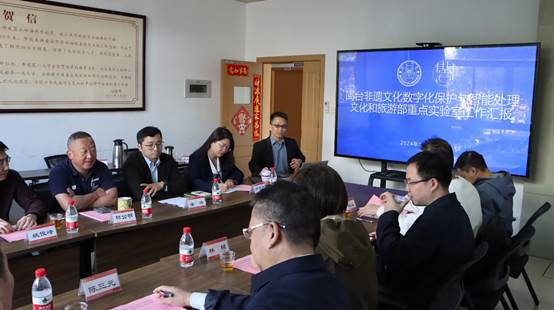
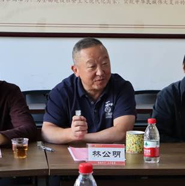
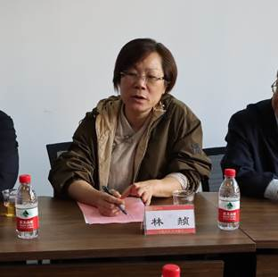
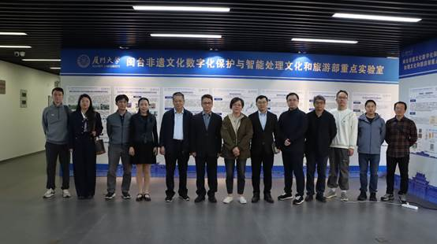

11月29日上午，福建省文旅厅科技教育处处长、一级调研员林赪一行赴厦门大学电影学院考察交流，旨在探讨数字科技赋能新文旅、以科技创新助力福建文旅产业的高质量发展、数字科技在文旅产业所取得的研究进展和实践成果等主题。
林赪一行首先参观了闽台非遗文化数字化保护与智能处理文化和旅游部重点实验室，实地考察实验室最新的科研成果。

在座谈中，实验室副主任姚俊峰教授介绍了实验室的基本情况，在新文科、新工科交叉发展、协同创新的原则下，展示了当代最新的人工智能技术融于闽台文化的数字化保护传承与发展、在闽台文化计算方面积累的亮丽成果。

厦门大学电影学院党委书记林公明首先介绍了学院的基本情况，他表示，文旅部重实验室与福建发展文旅产业非常对口，未来的合作可从这一方向入手，加强实验室与省市文旅部门的合作，定期进行良好的互动。

林赪表示本次座谈会成果颇丰，希望下一步能充分发挥学校资源优势开展深度探讨，进一步寻求特色化合作，共同为福建文旅产业发展贡献力量。


福建省旅游信息中心主任陈三元、文旅厅科技教育处二级主任科员王弼，厦门市文旅局公服处处长林曦，厦门大学社科处副处长季烨、建筑与土木工程学院副院长张若曦，科技处严文琦、信息学院教授史晓东、建筑与土木工程学院副教授王量量、电影学院教授刘昆宏等参加座谈。
图文：张延坤